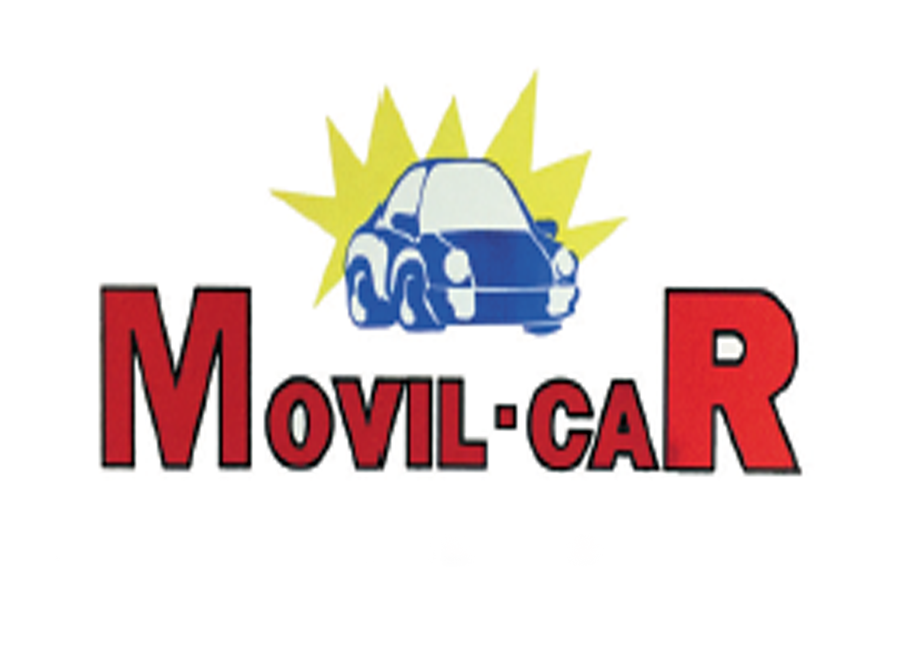
Se inaugura en Castellón el primer centro de lavado de vehículos con la marca Movil Car, en la cual participaban los profesionales que posteriormente fundarían Green Wash.
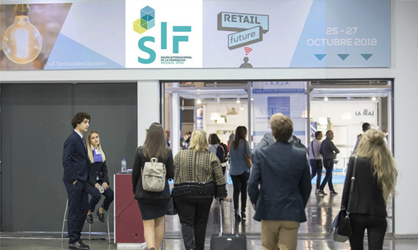
La firma Movil Car empieza su expansión mediante el modelo de franquicia que después adoptará Green Wash. Se abren centros en Castellón, Valencia y Barcelona.
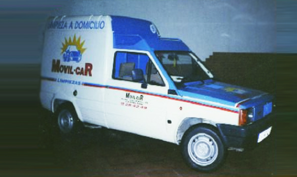
Se lanza al mercado la primera unidad móvil de servicio de lavado a domicilio, atendiendo a profesionales del sector, concesionarios oficiales y compraventa de vehículos.
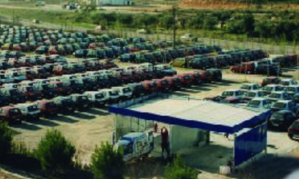
Movil Car consigue un contrato con una marca automovilística para limpiar más de 120.000 vehículos al año. Movil Car es nominada "Empresa del Año" de la Comunidad Valenciana.

Se crea la primera Máster Franquicia en Portugal para dar servicio de limpieza a varias flotas de aviones en el aeropuerto de Lisboa.
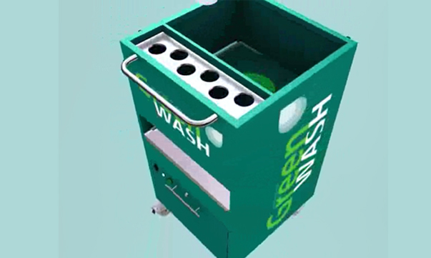
El equipo fundador de Green Wash deja Movil Car y comienza a investigar para desarrollar una tecnología de lavado ecológica que ahorre agua y energía.
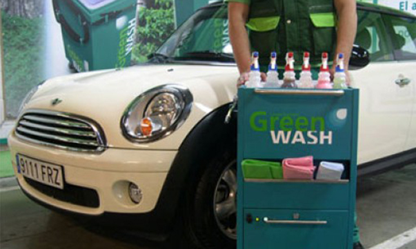
Se funda Green Wash en Madrid y patenta la máquina GW1 01, la primera generación de tecnología de lavado ecológico. Se empieza a comercializar en régimen de franquicia.
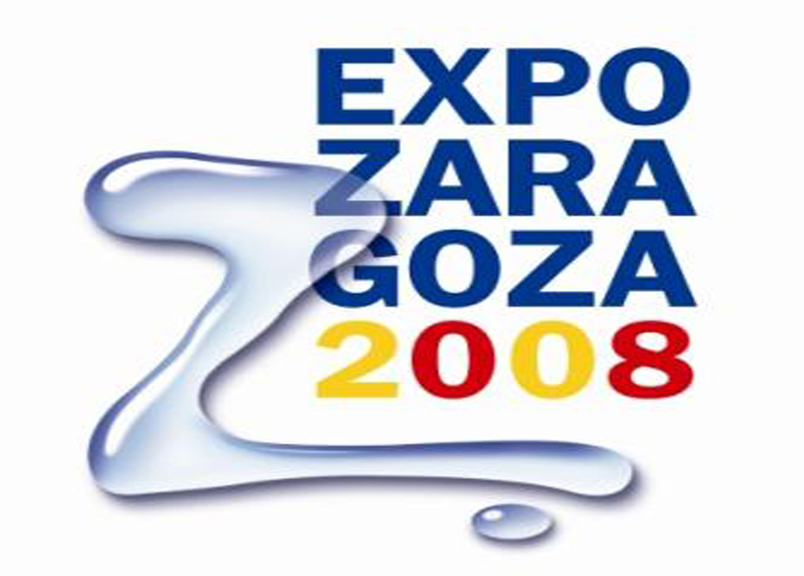
Green Wash alcanza los 30 centros franquiciados en España. Su tecnología de lavado ecológico es elegida para la limpieza de los coches oficiales de la Expo de Zaragoza.
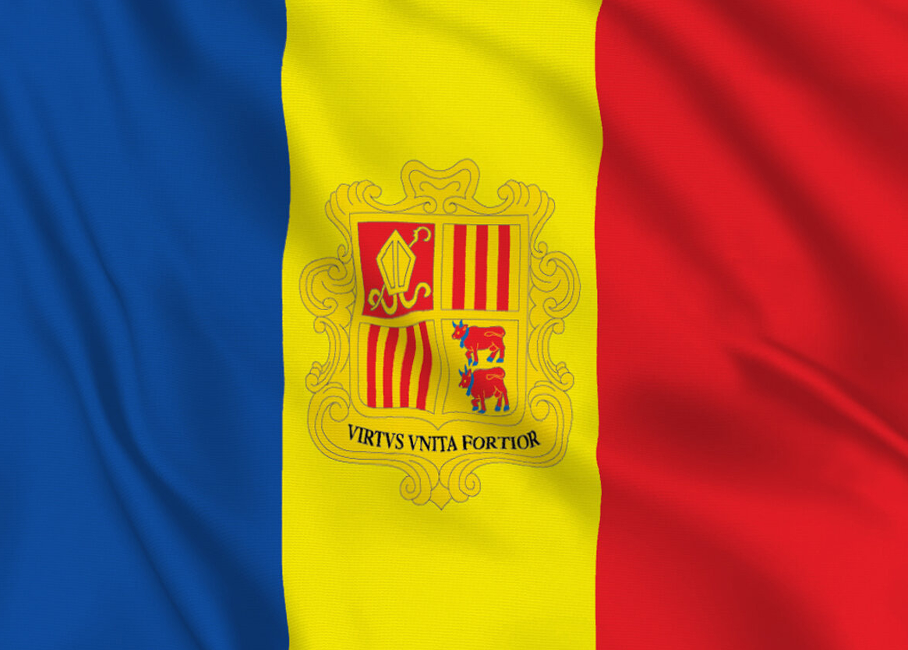
Green Wash abre sus primeros centros internacionales en Andorra y Bulgaria. Se firma acuerdo con el Ministerio de Igualdad para ayudar a mujeres maltratadas e integrarlas en Centros de Lavado Green Wash.
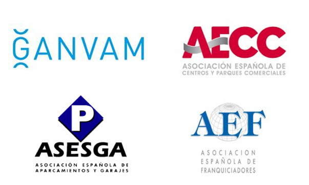
Green Wash presenta la segunda generación de su tecnología de lavado, la máquina GW1 02. Acuerdos de colaboración con GANVAM, AECC, ASESGA y AEF. La sede social se traslada a Ávila.
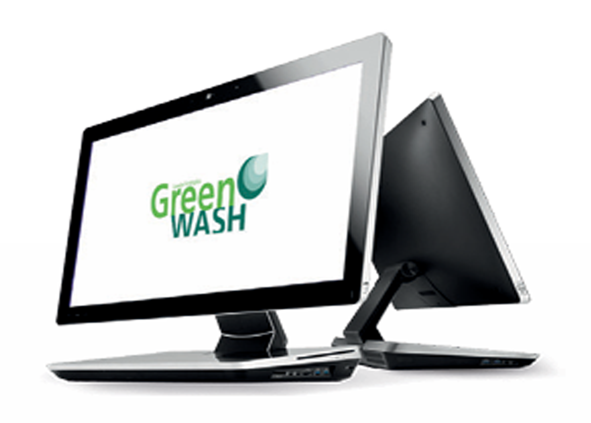
Se crea el Software de gestión y CRM para el control de toda la red de franquiciados.
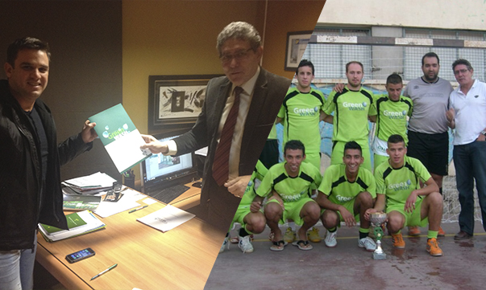
Comenzamos nuestra expansión por América Latina. Alcanzamos las 90 franquicias operativas en territorio español. Se llevan a cabo varios patrocinios relacionados con el cuidado medioambiental y el deporte juvenil. Se llega a un acuerdo para la limpieza de la flota de vehículos de Cruz Roja de la comunidad de Madrid.
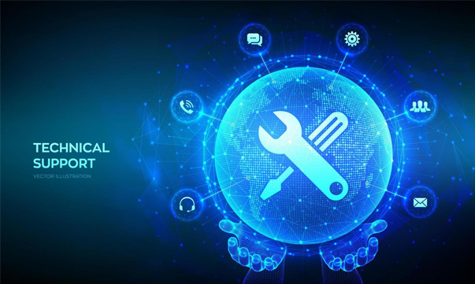
El desarrollo de la máquina GW1 03 representa un avance importante en nuestro I+D, ya que conseguimos que los equipos de limpieza no necesiten asistencia técnica externa. Nuestra marca y modelos industriales europeos son sometidos al registro internacional
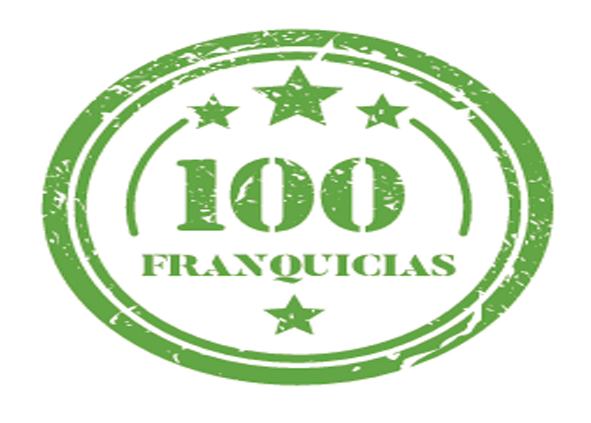
Celebramos la apertura de nuestra unidad móvil número 30 y superamos las 100 franquicias operativas.
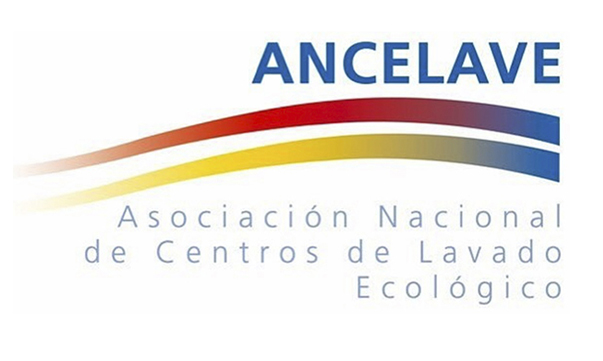
Comenzamos a preparar nuestro plan de internacionalización. Presentamos en el Congreso de los Diputados de la mano de ANCELAVE un Proyecto de Ley para regular el sector del lavado de vehículos en España.
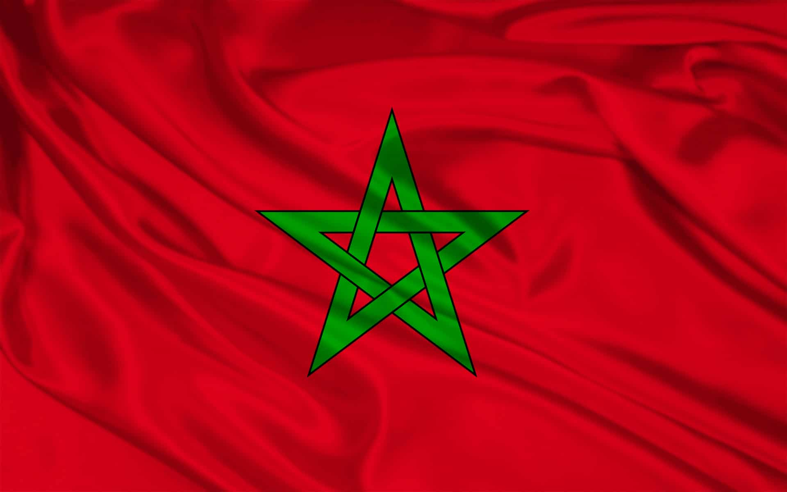
Inauguración del primer centro Green Wash en Marruecos en la ciudad de Tánger. Lanzamiento a nivel internacional del nuevo sistema de franquicia Modular "Ecolavado", patentado y que revolucionará el mundo del lavado de vehículos.
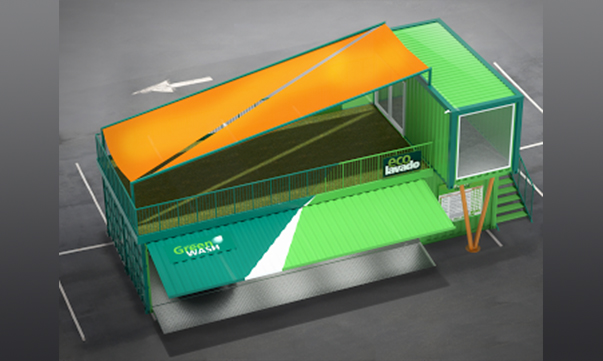
Lanzamiento a nivel internacional del nuevo sistema de implantación con CONTENEDORES MARÍTIMOS colaborando con el reciclado de materias primas. Esta ioncorporación Sostenible hacen de Green Wash una empresa modélica, donde el ahorro de agua y energía, la creación de empleo, la movilidad urbana, la integración social representan unos valores sólidos en el principio básico del crecimiento de Green Wash.
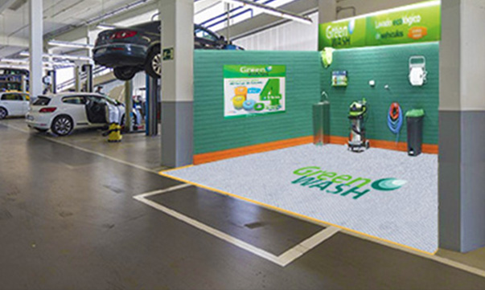
Lanzamos al mercado nueva linea comercialización para talleres en general (mecánicos, eléctricos, chapa y pintura, neumáticos y montaje de lunas). Con esta iniciativa, Green ash pretende incrementar el número de centros de lavado ecológicos en España para reducir al máximo el consumo de agua en nuestro País.
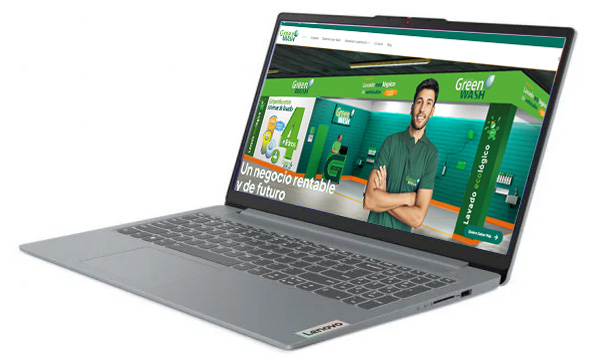
Se prepara nuestra salida al mercado americano. Se trabaja en la nueva página web y un nuevo CRM con inteligencia artificial.